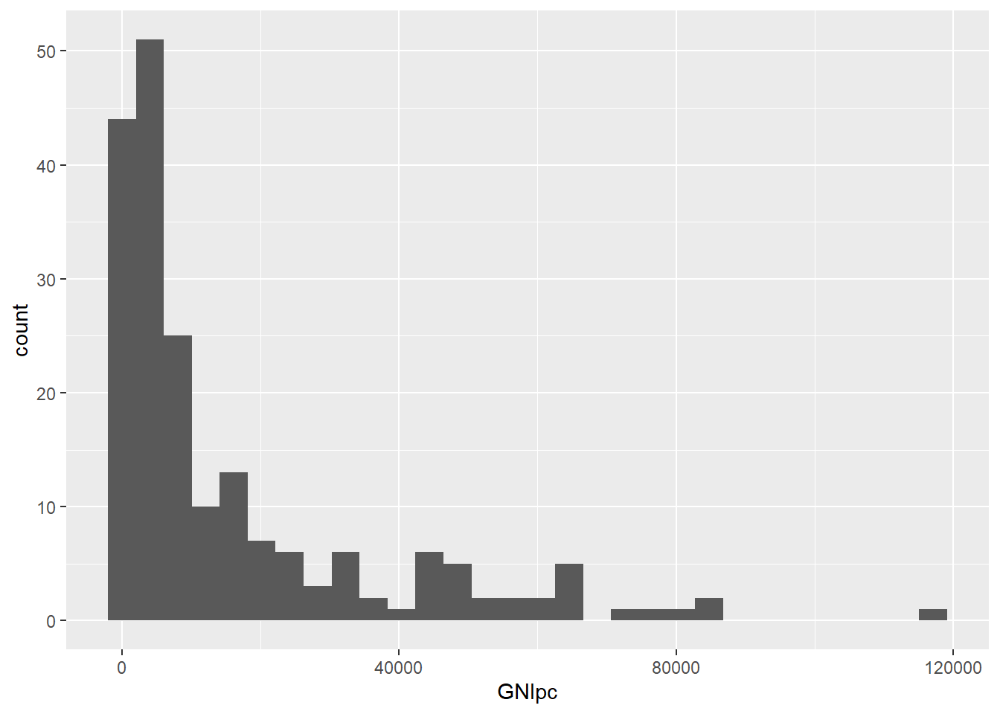

Chapter 1 Some basics
This chapter discusses some essential concepts related to data and data analysis in R, and should be read prior to the subsequent chapters of the book.
For ease of replication, all the data used in this chapter is available as an Excel file data_ch0.xlsx.
- You can replicate all analysis in the cloud here.
- Alternatively, to replicate the chapter in your own R installation, download the data file and corrsponding R-script from here and extract them inside a folder on your computer. Then set the working directory in R to the folder where the files are. For me, this is the following folder:
In addition, run the following code to install all the R libraries that will be used for the analysis
install.packages("readxl")
install.packages("dplyr")
install.packages("ggplot2")
install.packages("tidyr")and load them
1.1 Data
While a precise definition of data is beyond the scope of this book, for practical purposes data can be understood as a structured collection of observations on a number of characteristics or variables. Data is typically organized into a structure in the form of a table (or matrix) with rows corresponding to distinct observations and columns corresponding to different variables.
Data could be obtained in a variety of ways and from a variety of sources, and prior to analyzing data it is essential to understand the structure of the dataset obtained from a given source.
While the rest of the book uses larger datasets, for clarity this chapter uses a mini-dataset obtained as a subsample of the data from the next chapter. This “mini-data” is stored in the Excel file data_ch0.xlsx under the sheet mini. First, load the data into R, allocating it to a dataframe1 called data, and print it as follows
The “mini-dataset” includes information on region and GNI per capita (PPP)2 in 2019, 2020 and 2021 for four countries. The data is structured in the form of a table with each row corresponding to an individual country. It includes the country’s region in the second column. Finally, the value of GNI per capita (PPP) for years 2019-2021 is represented in separate columns, labeled by the year. Note that there is some missing data (the GNI per capita (PPP) of Turkmenistan in 2020 and 2021).
1.1.1 Cross-sectional, time-series, and panel data
One important aspect of data structure is whether the data is cross-sectional, time-series, or panel.
- Cross-sectional data consists of observations on subjects (such as individuals, firms, countries) at a single point or period of time.
- Time-series data consists of observations of a single subject over several points or periods of time.
- Panel (or longitudinal) data consists of observations on subjects over points or periods of time. It has both cross-sectional and time-series dimensions.
The data loaded above is an example of panel data, as it includes observations on four cross-sectional units (countries) for three distinct periods of time (years).
1.1.1.1 Panel data - long and wide form
When panel data is structured so that cross-sectional units vary across rows and time periods across columns (as above) it is said to be in wide form. While wide form is seemingly a natural way to arrange data, for most computational purposes it is more appropriate to arrange panel data in long form - i.e., collapsing the time period so that a row of the data now identifies a cross-sectional unit at a specific period of time:
long.data <- data %>%
pivot_longer(
cols = `2019`:`2021`,
names_to = "Year",
values_to = "GNIpc"
)
long.dataThe same dataset in “long” form has 12 observations, with each observation (row) corresponding to a country in a given year. The dataset includes 4 variables (columns) identifying the country, its region, the year, and the country’s GNI per capita (PPP) in the specific year.
As a side note, panel data in long form can also be transformed into wide form:
1.1.1.2 Cross-sectional data
An example of cross-sectional data, is the subset of the panel data above, at a particular year only. It has the following structure:
In the context of our dataset, cross-sectional data is appropriate for understanding differences in living standards (measured by GNI per capita (PPP)) between countries (and between and within regions) at a specific point in time.
1.1.1.3 Time-series data
An example of time-series data, is the subset of the panel data above, for a particular country only. It has the following structure:
In the context of our dataset, time-series data is appropriate for understanding the dynamic evolution of living standards (measured by GNI per capita (PPP)) in a given country over time.
As panel data has both cross-sectional and time-series dimensions, it is appropriate for analyzing both cross-country differences and dynamic evolution of living standards over time.
1.1.2 Visualizing the structure of your data
As illustrated above, before starting any data analysis, it is essential to get a clear understanding of the structure of your data. For this reason, it is important to always inspect the data (i.e., the “table” or rows and columns), understanding what does an observation (row of data) identify, how are variables (columns of data) recorded, and so forth. In the rest of the book, whenever new dataset is loaded we will explicitly print the first few rows of the data to clarify the structure. In R, this can be easily done by using the function head() which will print the first few rows of a dataframe. The syntax is head(name_of_dataframe).
While this is often sufficient for the purposes of the book, when you use more complicated datasets it is better to view the data in the data browser, using the function View() with syntax View(name_of_dataframe) which will return the whole “table” of data.
1.1.3 Categorical and quantitative variables
Another important aspect of the data is the nature of the variables in it. A complete discussion of the types of variables and data types in R is beyond the scope of the document but a key distinction relevant for the subsequent analysis is between quantitative and qualitative (categorical) variables.
To set ideas, consider the cross-sectional mini-dataset cs.data obtained above, consisting of 4 variables - Country, Region, Year and GNIpc.
- GNI per capita (measured in PPP adjusted international dollars) is clearly a quantitative variable. If we summarize the variable in R we can see that it has been correctly identified as quantitative
## Min. 1st Qu. Median Mean 3rd Qu. Max. NA's
## 2570 23680 44790 45423 66850 88910 1as the summary() function reports a number of summary statistics of the distribution (e.g. mean, median, etc).
- Region is clearly a categorical variable, as there is no single natural order of its possible values. We can see that among the four countries in the mini-dataset, three are from Europe and Central Asia, and one from South Asia. However, if we summarize the variable in R
## Length Class Mode
## 4 character characterwe see that it is classified as character (meaning text or string) which means that R does not recognize that three of the countries are from the same region. In such situations, it is important to explicitly tell R that the variable is categorical. In R, categorical variables are referred to as factor variables. We can declare the variable to be categorical as follows:
Now note that a summary of the variable
## Europe and Central Asia South Asia
## 3 1correctly recognises that the data consists of 3 countries from Europe and Central Asia and one country from South Asia.
While this discussion is not necessarily crucial for understanding the data representations in the rest of the book, it is important for understanding some bits of code, as we will often have to declare the type of variables.
1.2 A note on R packages
While a large number of functions are available as default in any R installation, one of the strengths of R, relative to other languages for statistical analysis, is that it has an extensive collection of user-contributed packages (collections of functions) which extend its functionality beyond the basis packages.
In order to use such packages within your code you need to first install the relevant package by typing install.packages("name_of_package") and then loading them inside your code by typing library(name_of_package). You will see that all chapters of the book use a variety of user-contributed packages which are installed and loaded in the beginning of the code. For example, at the beginning of this chapter we loaded four packages:
readxl- which includes a number of functions for reading data from Excel files. One of the functions in the package isread_excel()which we used to read data from the Excel file. Since this is not a base function, the statementdata <- read_excel("data_ch0.xlsx")would not have worked if we had not first installed and loaded the package.dplyrandtidyr- which include a large number of functions for reorganizing data. Without this thepivot_longer()function that we used to convert the panel dataset from wide to long format (this would have been possible with base R functions but much more cumbersome)ggplot2- this is an excellent package for producing graphs. At this stage we have not yet used the package but it will be used extensively throughout the book.
While a discussion of all the packages used is beyond the scope of the book, you can find all the key information related to them online. However, given the emphasis on producing graphs for the rest of the book, we will conclude this section with a brief discussion of the ggplot2 package (Wickham, 2016). To illustrate the use of ggplot() we load the second sheet from the data_ch0.xlsx file and allocate it to a dataframe csdata
Observe that the new dataset loaded is now a cross-section of observations for GNI per capita for 212 countries in 2019. We will say more about this data in the next chapter, but at this stage suppose that we want to produce a histogram summarizing the distribution of GNI per capita across countries in 2019.
R has a base in-built function hist() for producing histograms which we can use to produce a histogram of the GNI per capita distribution in our data as follows:
While the R’s base in-built library for graphs graphics is sufficiently extensive (you can find more about it here), for the remainder of this book we will make use of the more advanced and customizable library ggplot2 (more here).
To produce a histogram using ggplot2

Before proceeding further let’s briefly discuss the philosophy of the ggplot syntax.
ggplotis called through the functionggplot()which takes as first argument the name of the dataframe used (and possibly specification of aesthetics - see below).- Then with
+we add layers of types of graphs we want to plot. In the above examplegeom_histogram()specifies we are to plot a histogram. We could instead usegeom_bar()for barcharts,geom_boxplot()for boxplots, and so forth. You will see many examples of layers in the book. - Either inside
ggplot()or insidegeom_...()we need to specify the variables based on which the graph is to be plotted. Inggplotthis is specified via aesthetics through a functionaes(). Loosely, this refers to a set of statements about what is being plotted - e.g., what goes onxand/oryaxis, should different groups be plotted in different colors, etc. - Then all this can be customized further, by adding labels, color schemes, etc, as we will see throughout the book.
For example, we can customize the histogram further, by changing the color and fill, adding labels and titles as below:
ggplot(csdata, aes(x=GNIpc)) +
geom_histogram(bins=60, color="black", fill="red", alpha=0.5)+
xlab("GNI per capita, PPP (2019)") + ylab("Number of countries") +
labs(title="Histogram",
subtitle="Distribution of real GNI per capita across countries, 2019")This all sounds quite complicated, but the philosophy of plotting will hopefully become increasingly clear through examples.
References
In R and many other programming languages, a dataframe is a named object storing data in a 2-dimensional table of rows and columns, similarly to a spreadsheet.↩︎
Gross National Income (GNI) is the total income earned by a country’s residents (individuals or companies) from both domestic and foreign sources over a period of time. GNI is closely related to GDP, but accounts differently for income earned domestically and abroad.
- For example, when a UK resident earns income from operations in both UK and France, the income earned in France is part of UK’s GNI (but not UK’s GDP) and France’s GDP (but not France’s GNI).
GNI per capita (GNI pc), the average income earned by a country’s residents, is commonly used as a measure of material standard of living. However, given differences in price levels across countries, the same amount of income will have the “power” to purchase different amounts of goods and services in different countries. In order to account for this, the World Bank produces Purchasing Power Parity (PPP) adjusted measures of GNI per capita, which are more suitable for comparisons of living standard between countries.
In particular, in what follows we use data GNI per capita PPP-adjusted by the so called Atlas method - the indicator based on which the World Bank groups countries into low, middle, and high-income.↩︎